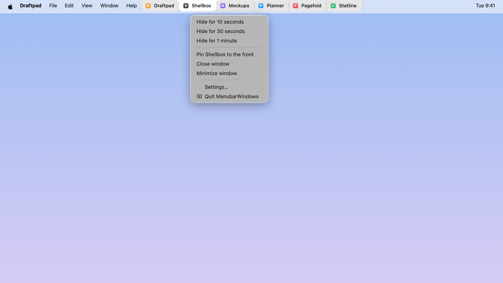
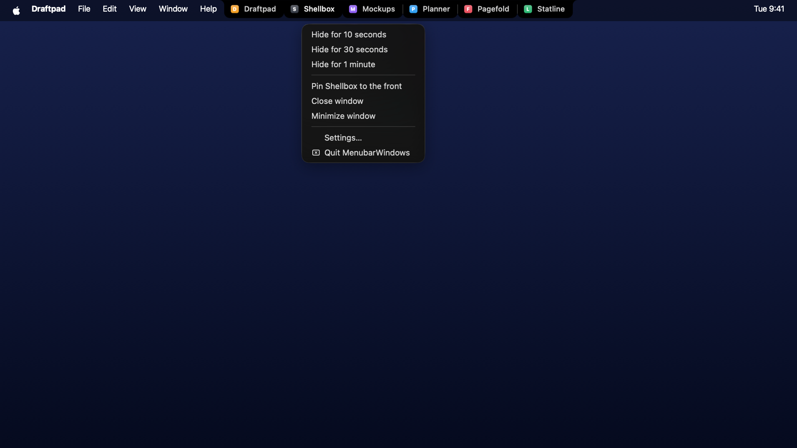
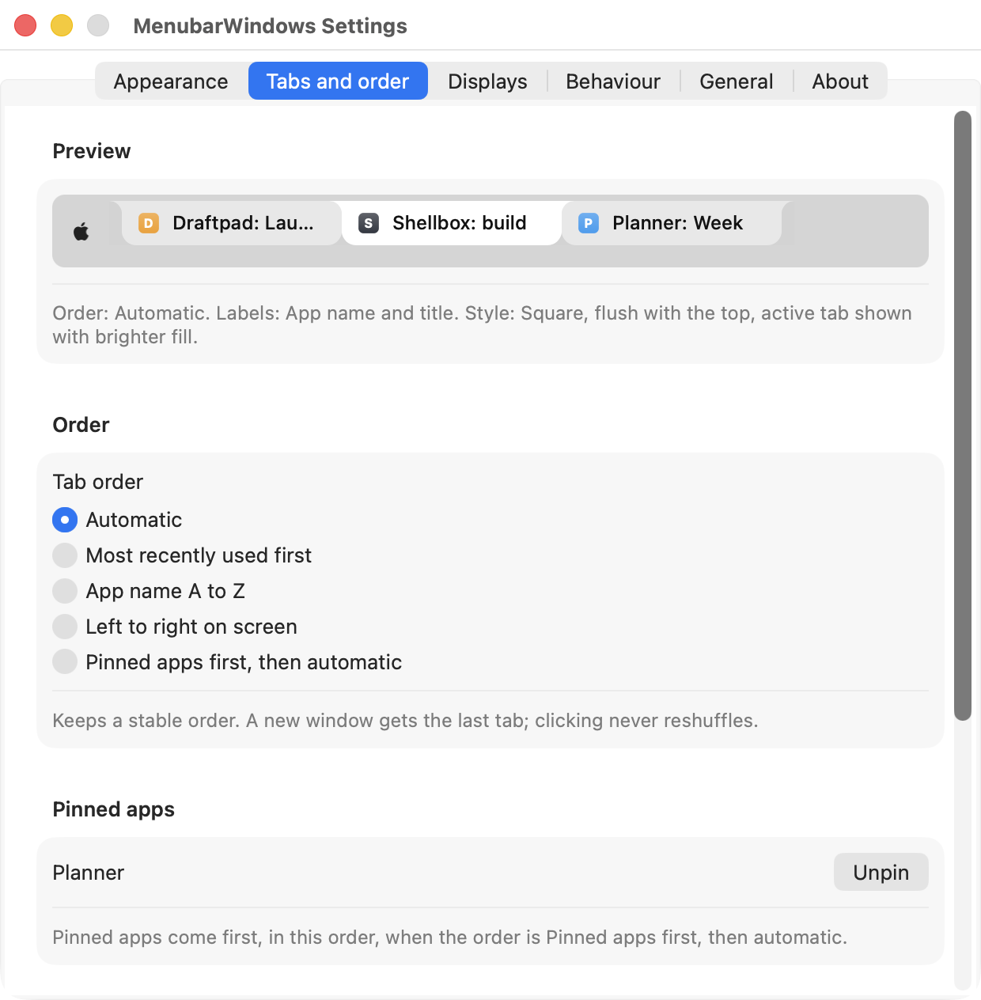

Free and open source macOS app
Your windows, as tabs in the empty middle of the menu bar.
MenubarWindows gives every window on a display its own tab, in the part of the menu bar you rarely use: the far end of an app's menu titles, and on a notched MacBook the stretch beside the notch. Push the pointer to the top, click, and you are there.
Got a notch? The strip ends just left of it, in the stretch where an app's menu titles are rarely used, and stays out of the way of your status icons. Want it on the left instead? One setting puts the tabs top left, right after the Apple menu.
Three steps, then it stays out of your way.
Open the app
No Dock icon, no menu bar icon. A short guide explains what it does and what it needs.
Allow Accessibility
macOS only shares window titles and window switching through Accessibility. The guide opens the right pane and notices on its own when you switch it on.
Click a tab
Each window on that display gets a tab. Click to bring it forward, right-click for more, middle-click to close.
Small on purpose.
Uses rarely used space
Tabs sit where menus are seldom clicked, next to the notch. Prefer the left? Put them top left, right after the Apple menu.
Built for the notch
On a notched MacBook the strip sits against the notch, on the side that has room, and leaves your status icons alone.
Reaches the top edge
Slam the pointer up and click. The tabs extend past the last pixel row, so you do not have to aim.
Per display
Every display shows only its own windows. Turn displays on or off one by one.
Your order
Stable, most recent first, A to Z, left to right on screen, or pinned apps first.
Hide on demand
Need the menus underneath? Hide the strip for 10, 30 or 60 seconds, or your own choice.
Light on resources
A small native app with no background services and no third-party code.
Nothing leaves your Mac
No network connections, no analytics, no accounts. It does not need Screen Recording.
The real app, with made-up windows.



Tune it once. Changes apply as you make them.
Preview
Order
Labels
Questions worth asking.
Why does it need Accessibility permission?
macOS only lets an app read window titles, see which window is focused, and raise, minimize or close windows through the Accessibility API. MenubarWindows uses it for exactly that. It does not record the screen and does not need Screen Recording permission. Window titles stay in memory and are never saved or sent anywhere.
Why is it not on the App Store?
App Store apps must run in the sandbox, and sandboxed apps cannot control other apps' windows through Accessibility. So it will be offered as a direct download instead.
Which macOS versions are supported?
macOS 13 Ventura or later.
Does it work on a MacBook with a notch?
Yes. On a notched display the strip ends just left of the notch and stays clear of the status icons. If the remaining space is too small, the strip hides rather than overlapping.
Is it free?
Yes. It is free, with no account and no in-app purchases.
Is the build signed?
Not yet for distribution. Early builds are not notarized by Apple, so macOS will warn the first time you open one. You can also build it yourself from the source. Notarization is planned.
Free and open source.
MIT licensed. Read the code, build it yourself, or install with Homebrew: brew install --cask jovylle/tap/menubarwindows.
- Free
- macOS 13 or later
- brew install --cask jovylle/tap/menubarwindows
- Not notarized yet